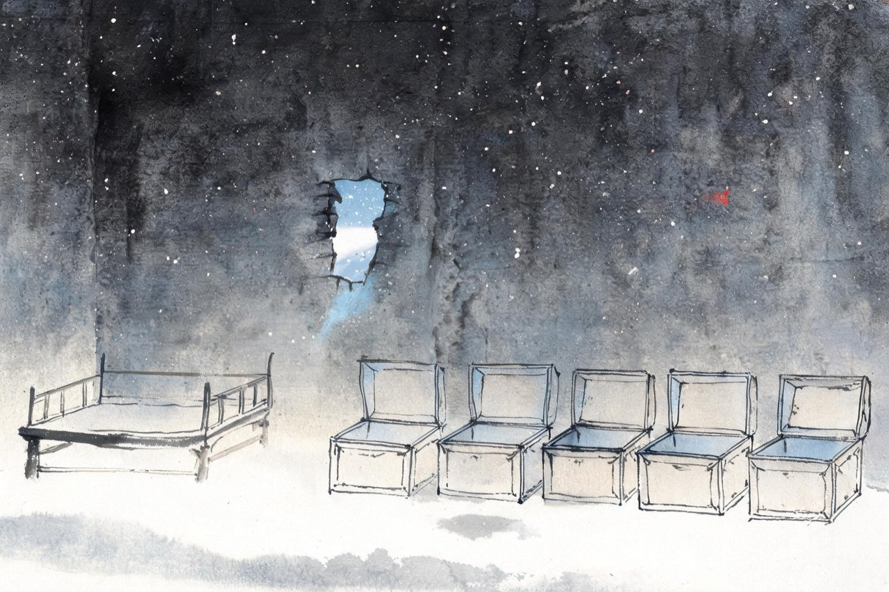
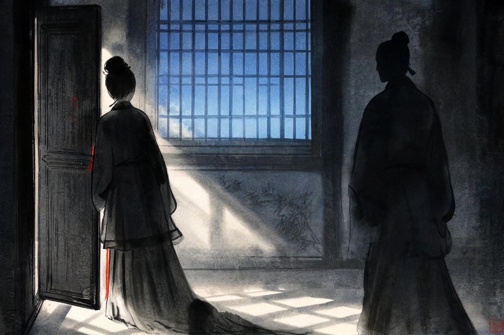

李清照 · 1130-1133
江南
倔强
颁金之谤
有个叫张飞卿的学士，带着一把玉壶来给你看，请你鉴定。壶看过，人走了——话传开了：那把壶是玉的，李清照要拿去献给金人。
「颁金」——通敌。这样的罪名安在一个寡妇头上，只因为她身边的东西太值钱。
你大惶怖。把家里剩余的铜器珍品全部收拾出来，决定追赶朝廷，当面进献——用自证洗清自毁的嫌疑。
于是从越州追到台州，太守已逃；出陆到剡县，弃了衣被走黄岩；雇船入海，赶到章安行在——御舟驻跸于此，你随御舟海道到温州，再折回越州。谣言后来不了了之。你追着皇帝的船跑了一路，只为洗清一个不存在的罪名。
注
- 「颁金」之谤与追赶行在的路线，均《后序》自述；系年从黄盛璋考订，建炎四年
- 张飞卿携来看的壶，或谓珉类（似玉之石）——《后序》自言「颁金」之说由是而起，真相不可考

夜失五簏
绍兴元年三月，你回到越州，租住在一个姓钟的百姓家里，把仅存的书画砚墨装在五只箱子里，放在卧榻边。
冬天的某个夜里，墙上被凿开一个洞。五只箱子，被人从洞里搬了出去。
事发后，你重立赏钱收赎。后二日，邻人钟复皓拿出十八轴画卷来领赏——偷东西的，就是近处的邻人。其余的——那五箱，是你从青州背出来、从洪州散失里抢出来的最后精华——永远不知去向。
你在床边睡了几个月的东西，一夜之间，墙补好了，箱子没了。
注
- 「簏」：竹箱；被盗后立赏收赎、追回十八轴，均《后序》自述
- 《后序》自言至此藏书「十去其七八」——本页深色底：失去延伸到最私密的物件

再嫁
绍兴二年夏，临安。年近五十，孤身多病、举目无亲的你，改嫁了监诸军审计司张汝舟。
婚后不久，你就看清了这个人：他图的是你剩余的收藏。发现真正到手的没有想象中多，他便原形毕露——先是冷语，继而拳脚，「日加殴击」。
你再一次陷进绝境：身边没有一个可依靠的人，只有一场必须摆脱的婚姻。而摆脱它的办法，你想得很清楚。
注
- 再嫁、离异为宋人多种记载一致（李心传《要录》、赵彦卫《云麓漫钞》收启文等）；明清学者始有「辨诬」之辩，今从王仲闻、黄盛璋考订，再嫁为实录
- 「遂肆侵凌，日加殴击」：《投綦崇礼启》原文
- 本页深色底：暴力不直写，取构图暗示
系狱九日
摆脱他的办法只有一个：告发他。你手里有实据——张汝舟当年应举，「妄增举数入官」，虚报考试次数骗取官位，违法。
绍兴二年九月，案发。张汝舟被除名，编管柳州。
但依宋律：妻告夫，即使属实，妻子也要服两年徒刑。告发的同时，你自己走进了牢狱。
第九天，你出来了——翰林学士綦崇礼，赵家的姻亲，出面援手营救。你后来写长启谢他，信中有两句，把这段婚姻的底细说尽：「猥以桑榆之晚景，配兹驵侩之下才」。这场婚事，从头到尾不过百日。
注
- 妻告夫徒二年为《宋刑统》条文；系狱九日得綦崇礼营救获释，见《投綦崇礼启》自述
- 「桑榆之晚景」一作「晚节」——异文并录
- 「百日」：自夏再嫁至九月案发的大约时长，从考订，作约数叙述
风波过后，大病之后，你在临安重新开始过日子。病起的时候，两鬓已经见白。卧看残月上窗纱，煎一盏豆蔻熟水，不急着分茶——诗书还在枕上，门前有雨，秋深有桂。劫后的人，把日子过回了最小的单位——
摊破浣溪沙·病起萧萧两鬓华
病起萧萧两鬓华，卧看残月上窗纱。
豆蔻连梢煎熟水，莫分茶。
枕上诗书闲处好，门前风景雨来佳。
终日向人多酝藉，木犀花。
注
- 「熟水」：宋人煎草药或香料而成的饮品；「分茶」：茶道杂艺，病中不作
- 「木犀」：桂花；「酝藉」：含蓄温和——以花拟人，亦自况
- 作年无确考，词境为大病之后——系于讼案病后，语境取晚年病中
绍兴三年五月，朝廷派韩肖胄、胡松年出使金国，通问被掳的徽、钦二帝。使船出发那天，百官送到码头。你——一个四十九岁的寡妇——托人献上长诗。「嫠家」，寡妇的自称。你的父祖生在齐鲁，而齐鲁如今是金人的土地——
上枢密韩公、工部尚书胡公诗（节）
嫠家父祖生齐鲁，位下名高人比数。
当年稷下纵谈时，犹记人挥汗成雨。
子孙南渡今几年，飘流遂与流人伍。
欲将血泪寄山河，去洒东山一抔土。
注
- 诗为古、律各一首，此处节古诗后段；「东山」指齐鲁故山，兼寓父祖坟茔所在
- 「挥汗成雨」用《战国策》齐都临淄典——稷下旧事，故乡记忆
- 外有律诗一首「想见皇华过二京」云云，此不录